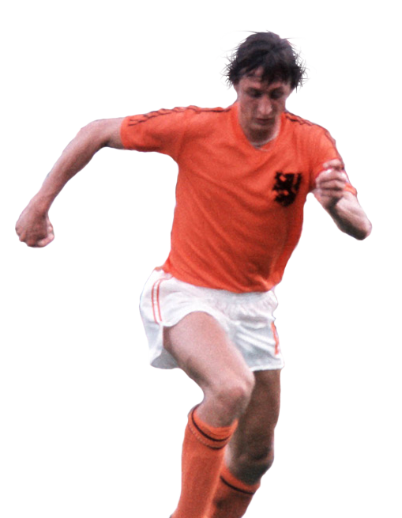

Cruyff
Hendrik Johannes Cruijff, conocido internacionalmente conocido como Johan Cruyff es un exfutbolista neerlandés, exentrenador del FC Barcelona y expresidente de honor del FC Barcelona.
Diez temporadas en el primer equipo del Ajax, ficha en 1973 por el FC Barcelona, del que se marcharía en 1978 para recalar en la Liga Estadounidense de Fútbol, jugando tres temporadas, intercaladas con una temporada en el Levante UD que militaba en la Segunda División de España, para volver finalmente en 1981 a la liga neerlandesa, militando dos temporadas en el Ajax y su última temporada como jugador en el Feyenoord de Rotterdam.
Recibió el Balón de Oro en tres ocasiones (1971, 1973 y 1974), marca que comparte con Michel Platini y Marco Van Basten. Cruyff fue el más famoso exponente de la filosofía de fútbol conocida como Fútbol total.
En 1984, tras retirarse como jugador de los terrenos de juego, Cruyff se convirtió en entrenador del Ajax y más tarde en entrenador del FC Barcelona, clubes de los que sigue siendo un influyente asesor.
Considerado por la FIFA uno de los cuatro mejores jugadores de fútbol del siglo XX, y el mejor de Europa. Elegido en segunda posición como Mejor Jugador del Siglo XX por la IFFHS y en 1999 como el tercer Mejor Jugador del Siglo por todos los ganadores del Balón de Oro hasta la fecha.
